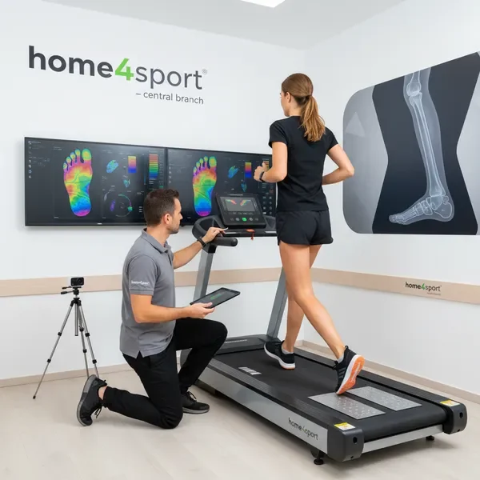
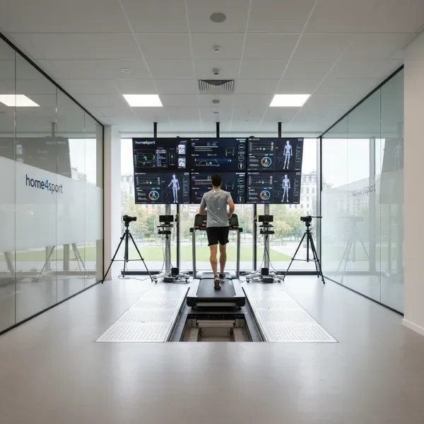
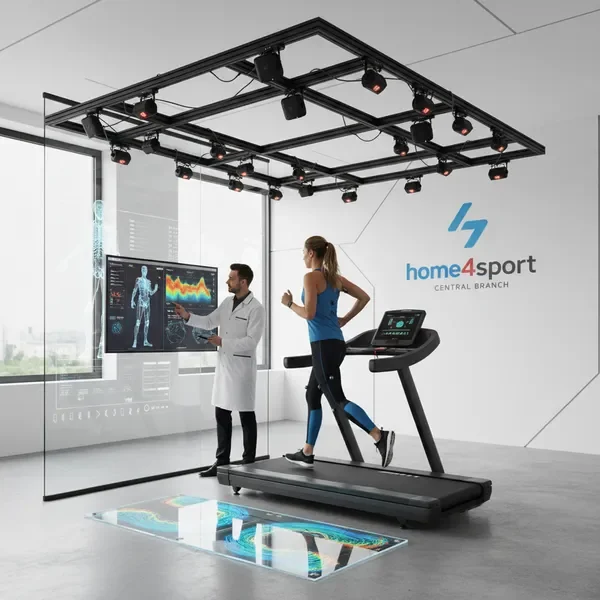

השירותים המובילים שלנו

מדרסי ScanandSole
טכנולוגיה מתקדמת ללא מגע ידי אדם, 12 סוגים שונים של מדרסים המותאמים לכל סוג נעל. פתרון מושלם לכל בעיות כף הרגל עם התאמה אישית מדויקת.

התאמת נעלי ריצה אישית
ניתוח מקצועי של דפוס הריצה שלכם והתאמה מושלמת של נעליים לצרכים האישיים. המומחים שלנו מבטיחים שתמצאו את הנעל המושלמת לסגנון הריצה שלכם.

מעבדת ריצה מקצועית
ניתוח ביומכני מקיף עם ציוד מתקדם, כולל מצלמות מהירות, לוחות כוח וניתוח תנועה תלת-מימדי. קבלו תובנות מעמיקות על טכניקת הריצה שלכם.

מעטפת 360 לרצים וספורטאים
שירות מקיף לספורטאים ברמה המקצועית הגבוהה ביותר. כולל ניתוח מלא, התאמת ציוד, תוכנית אימונים אישית ומעקב שוטף לשיפור מתמיד.